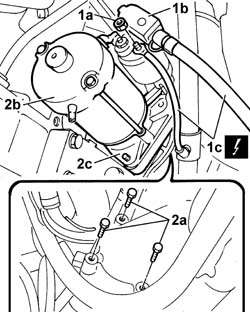

5520B10 STARTER MOTOR - R+R
- Path
- Procedures > 55 ELECTRICAL EQUIPMENT > 5520 ENGINE STARTING > 5520B STARTER MOTOR AND COMPONENTS > 5520B10 STARTER MOTOR - R+R
- Kind
- repair procedure (removal / refitting; the operation number is the code)
- Applies to
- all engines; all production periods
- Interactive page
- https://sloeber94.github.io/elrnDB-fDct/en/#/244001351
Applies to: all engines; all production periods
 Removing
Removing
 Refitting
Refitting- Position the vehicle on the lift.
Op. 7055B54 UNDER-ENGINE GUARD - R R
- Disconnect the negative battery terminal.
- Raise the vehicle.
1. Undo the nut (1a), remove the protective cover (1b) and disconnect the starter motor supply leads (1c).
 | Description | Connector |
|---|---|---|
1c | Battery | A001A |
| Description | Connector |
|---|---|---|
1c | Alternator | A010B |
2. Undo the retaining bolts (2a) and remove the starter motor (2b), complete with spacer (2c).

Applies to: engines: 2.3 JTD 16V; all production periods
Refitting
Removing- Position the starter motor spacer.
Applies to: all engines; all production periods
- Connect the starter motor electrical wiring and close the protective cover.
| Description | Connector |
|---|---|---|
. | Alternator | A010A |
| Description | Connector |
|---|---|---|
. | Battery | A001B |
- Lower the vehicle.
- Connect the negative battery terminal.
Op. 7055B54 UNDER-ENGINE GUARD - R R
- Remove the vehicle from the lift.
Applies to: engines: 2.3 JTD 16V, 2.8 JTD 8V; all production periods
- Fit the starter motor and tighten the retaining bolts to torque.
 | Value - daNm | Fastening | Component | Ø |
|---|---|---|---|---|
. | 2 | Bolt | STARTER MOTOR | M8 |
Applies to: engines: 2.0 JTD 8V; all production periods
- Fit the starter motor and tighten the retaining bolts to torque.
| Value - daNm | Fastening | Component | Ø |
|---|---|---|---|---|
. | 4.5 | Bolt | STARTER MOTOR | M8 |
Applies to: engines: 2.0 16V; all production periods
- Fit the starter motor and tighten the retaining bolts to torque.
| Value - daNm | Fastening | Component | Ø |
|---|---|---|---|---|
. | 2 | Bolt | STARTER MOTOR | M8 |